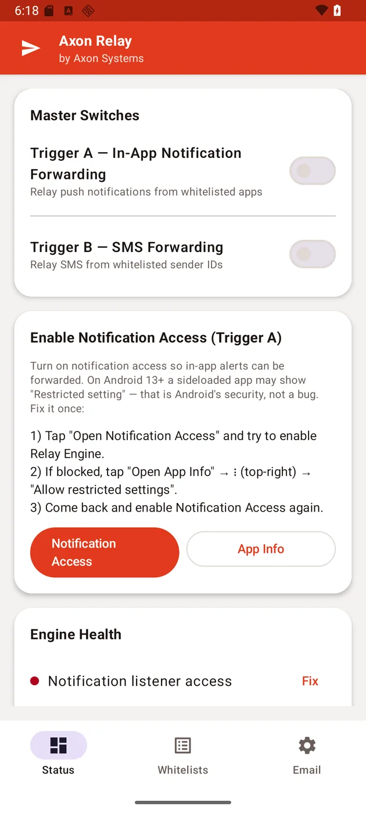
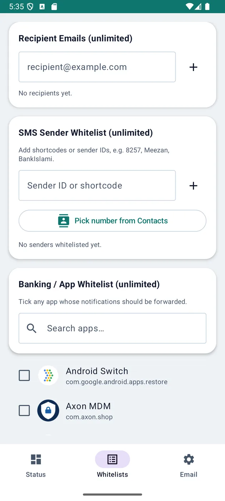
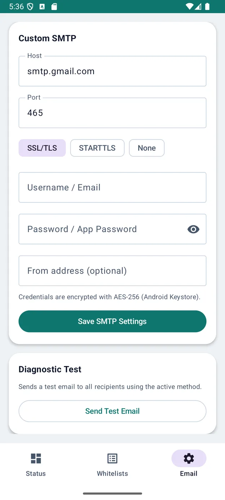
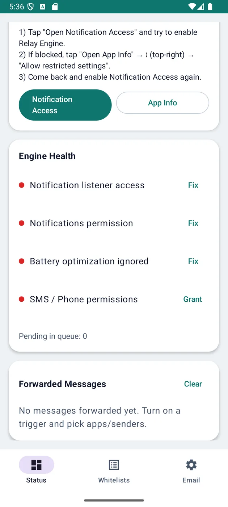

Mobile
Axon Relay
The phone at the counter turns every bank alert into a confirmed payment, by itself.
A customer says "I've sent it." Relay waits for the bank's own notification on the counter phone and forwards it where the money is recorded — so nobody confirms a payment on a screenshot again.

The problem
Confirming an online payment from a customer's screenshot is a trust problem wearing a data-entry costume.
What it does
Relay closes it by capturing the bank's own notification on the desk's phone and forwarding it onward, so confirmation comes from the bank rather than from whoever is standing at the counter.
Two triggers - whitelisted app notifications and whitelisted SMS senders - feed a durable queue that survives a dead connection and retries. A sticky foreground service keeps it running, and an Engine Health panel names whichever permission is missing instead of failing silently.
Details
- Trigger A forwards in-app notifications: a bank or wallet app's own alert, captured the moment it arrives
- Trigger B forwards SMS from whitelisted senders — shortcodes and bank sender IDs
- Pick exactly which apps and senders count; everything else on the phone is ignored
- Durable offline queue with automatic retry — a dead connection delays, never loses
- Credentials encrypted with AES-256 via the Android Keystore; the send path is the owner's own SMTP
- Engine Health names whichever permission is missing instead of failing silently
More screens


